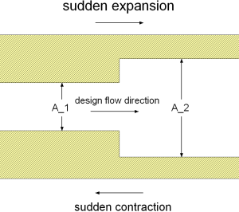
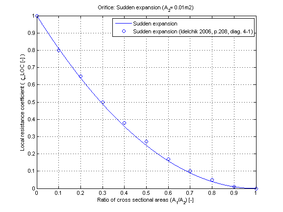
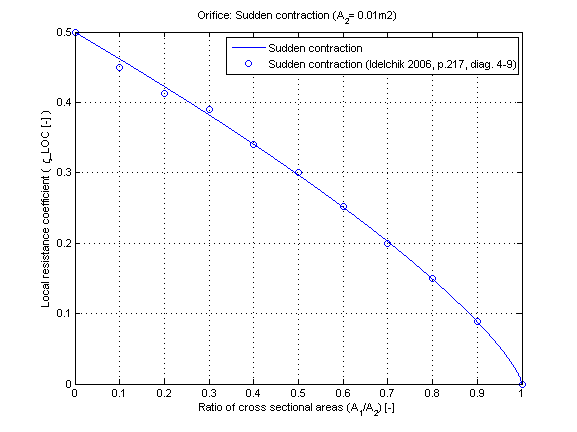

dp_suddenChange |
|
Information
This information is part of the Modelica Standard Library maintained by the Modelica Association.
Restriction
This function shall be used within the restricted limits according to the referenced literature.
- Smooth surface
- Turbulent flow regime
- Reynolds number for sudden expansion Re > 3.3e3 [Idelchik 2006, p. 208, diag. 4-1]
- Reynolds number for sudden contraction Re > 1e4 [Idelchik 2006, p. 216-217, diag. 4-9]
Geometry

Calculation
The local pressure loss dp is generally determined by:
dp = 0.5 * zeta_LOC * rho * |v_1|*v_1
with
| rho | as density of fluid [kg/m3], |
| v_1 | as average flow velocity in small cross sectional area [m/s]. |
| zeta_LOC | as local resistance coefficient [-], |
The local resistance coefficient zeta_LOC of a sudden expansion can be calculated for different ratios of cross sectional areas by:
zeta_LOC = (1 - A_1/A_2)^2 [Idelchik 2006, p. 208, diag. 4-1]
and for sudden contraction:
zeta_LOC = 0.5*(1 - A_1/A_2)^0.75 [Idelchik 2006, p. 216-217, diag. 4-9]
with
| A_1 | small cross sectional area [m^2], |
| A_2 | large cross sectional area [m^2]. |
Verification
The local resistance coefficient zeta_LOC of a sudden expansion in dependence of the cross sectional area ratio A_1/A_2 is shown in the figure below.

The local resistance coefficient zeta_LOC of a sudden contraction in dependence of the cross sectional area ratio A_1/A_2 is shown in the figure below.

References
- Elmqvist, H., M.Otter and S.E. Cellier:
- Inline integration: A new mixed symbolic / numeric approach for solving differential-algebraic equation systems.. In Proceedings of European Simulation MultiConference, Praque, 1995.
- Idelchik,I.E.:
- Handbook of hydraulic resistance. Jaico Publishing House, Mumbai, 3rd edition, 2006.